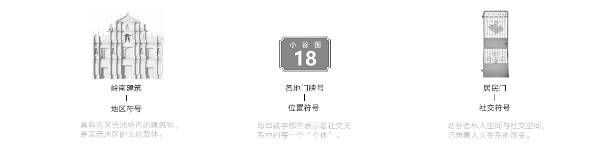
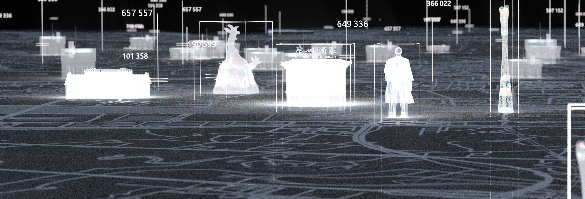
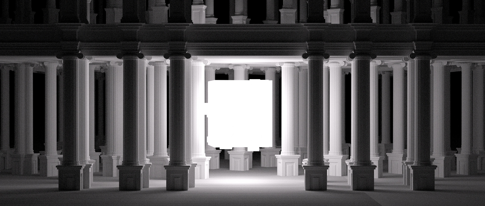
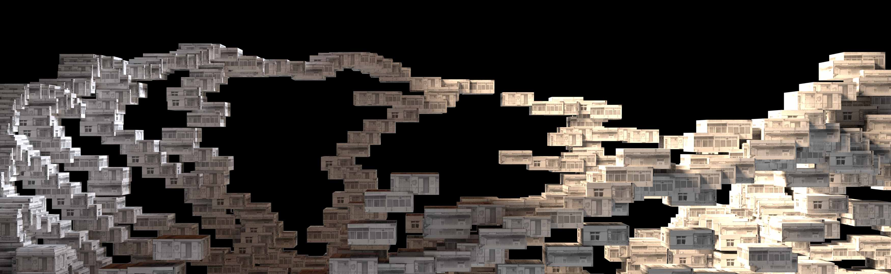
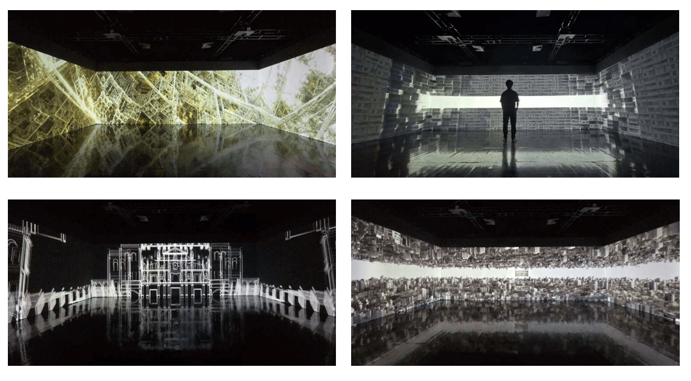
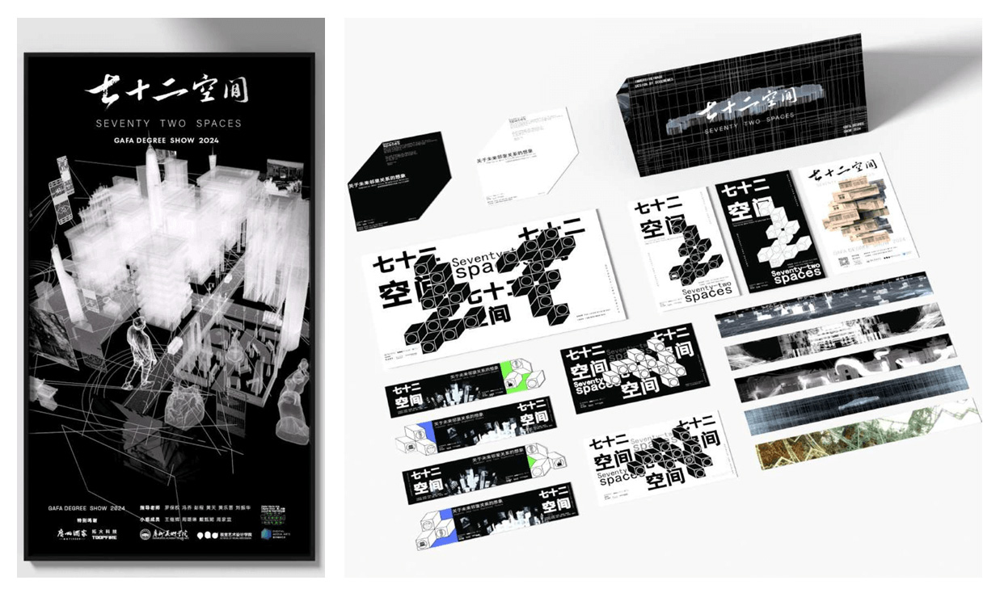

七十二空间
项目背景 Concept
随着时代演进，大湾区传统的院落式社区已转变为现代商品房布局，社交活动转向线上。 作品以广东经典剧集《七十二家房客》为概念起点，着眼于“邻里关系”的变迁。 通过数字艺术形式，唤醒大众对湾区城市文化特色和人文精神的记忆，重塑对新时代和谐邻里关系的想象。
符号系统 Symbols
作品提取了三个核心视觉符号进行数字化再现：

岭南建筑
地区符号 / 文化载体门牌号
位置符号 / 个体身份居民门
社交符号 / 空间界限叙事分镜 Storyboard
作品在时间轴上分为三个篇章，层层递进：

01. 建立 Establishment
从大湾区出发，通过生成各地区特色建筑（如骑楼、地标），表达邻里关系的物理基础与建立过程。

02. 交融 Fusion
利用 XP 粒子与 Mograph 运动图形，将港珠澳大桥、九龙城寨等意向进行连接与融合。

03. 重构 Reconstruction
通过分形与粒子消散手法，表达打破隔阂、构建新型和谐邻里关系的愿景。
现场呈现 Exhibition

沉浸式空间实拍

展览海报与物料
负责内容 My Role
- 策划与设计： 概念方案提出、资料收集、分镜设计。
- 三维制作： 场景建模、Octane 材质渲染、Substance Painter 贴图绘制。
- 特效与后期： X-particles 粒子与烟雾特效制作，PR 剪辑与 AE 合成。